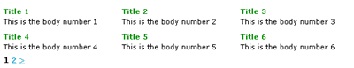

DataTable
DataTable is an html table of records, where each cell is a record, and can have a html pattern.
You can set the number of items/records per row and number of items/records per page (think for example to a fotogallery).
It is a template based component, and it extends DataSet.
It support a tag-based "functions/fields pattern" for process/format directly the output (inside controllers/models).
Sample:
constructor:
DataTable($title, $datasource)
params: string $title (can be empty), mixed $datasource
main properties:
base_url
(the same of CI pagination config) used to build nav-links.
It's optional, can be autodetected, if last uri_segment is number it assume that is the page-offset.
uri_segment
(the same of CI pagination config) used to build nav-links
It's optional, can be autodetected (if not specified rapyd assume it is the last uri_segment).
per_page
(the same of CI pagination config) max number of records per page
.. and all other pagination $congif["vars"]
per_row
max number of records on each row
cell_template
a string that is the html pattern for each table cell
main methods:
use_function($functionname [, $other_function_name..])
prepare the tag-engine to exec function passed in field patterns
In application/config/rapyd.php you can setup the autoloaded functions.
build()
exec queries if datasource is ActiveRecord, build html output.
it's returned and passed to $table->output property.
output:
output
string, the built html table